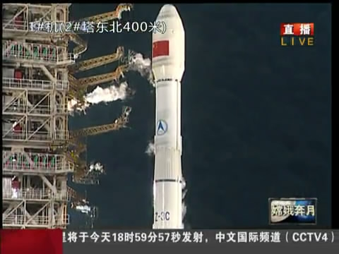
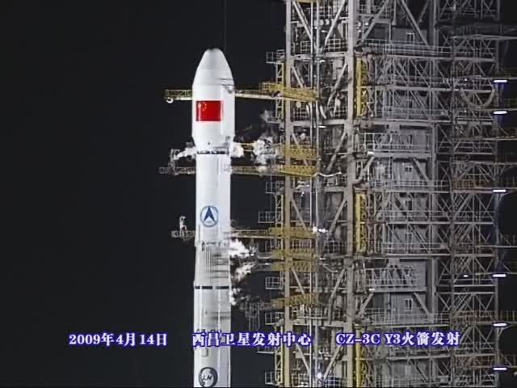

 
2010年10月1日CZ-3C发射嫦娥二号升空 2009年4月14日CZ-3CY3火箭发射视频
航天科普
中华人民共和国的航天事业起始于1956年。中国发展航太事业的宗旨是：探索外太空，扩展对地球和宇宙的认识；和平利用外太空，促进人类文明和社会进步，造福全人类；满足经济建设、科技发展、国家安全和社会进步等方面的需求，提高全民科学素质，维护国家权益，增强综合国力。中国发展航太事业贯彻国家科技事业发展的指导方针，即自主创新、重点跨越、支撑发展、引领未来。